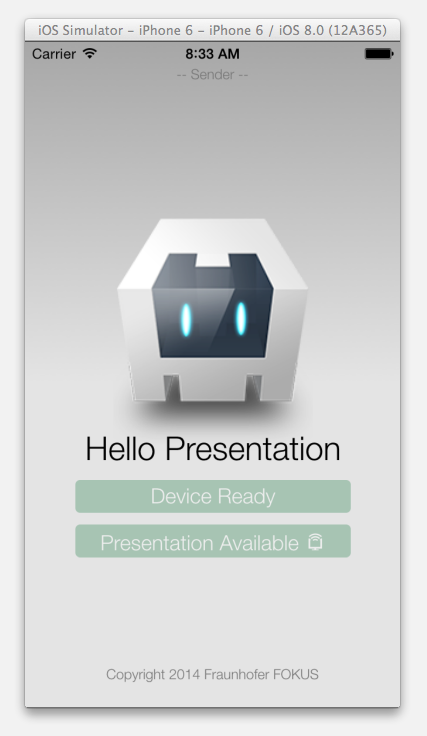
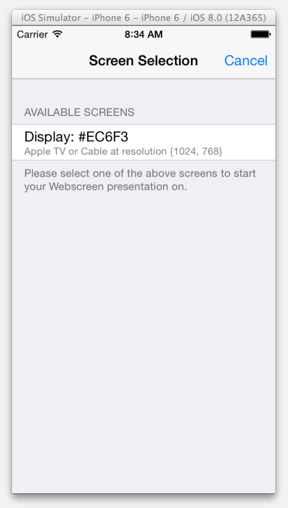
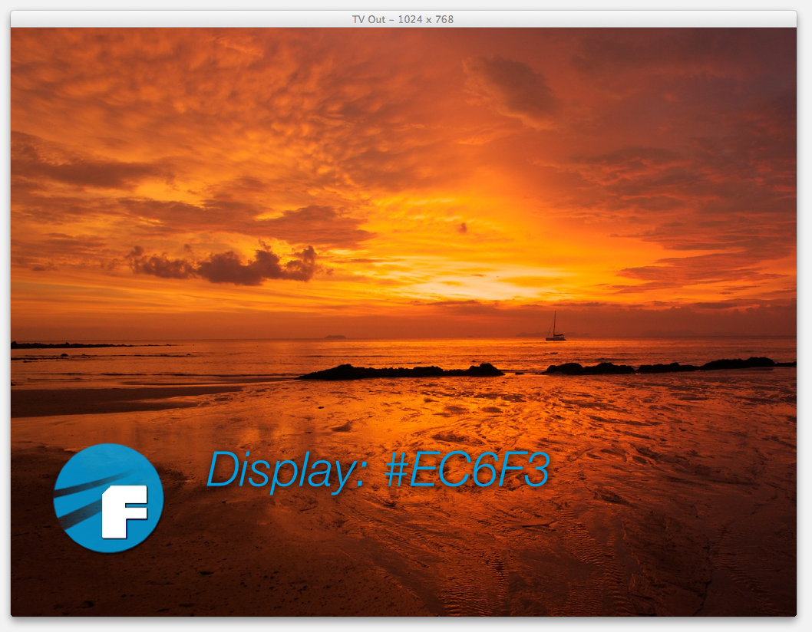

HelloApp - Sample App using the Presentation API Plugin
This sample app bases on the standard cordova sample app and extends it by a multi-screen feature using the Cordova Presentation API Plugin. The goal of this app is to showcase the capability of the Presentation API that is discussed by the W3C Second Screen Presentation Working Group.
Comments and contribution anytime welcome.
Screens
When the application launches on the device (currently Android and iOS devices are supported)
the following screen will be presented, displaying the availability of attached
external screens. To make a screen available to the application just attach a AV cable to the device or activate wireless screen mirroring (within the iOS simulator choose e.g. Hardware -> External Display -> 1024 x 768):

When the "Presention Available" button is clicked the navigator.presentation.requestSession("receiver.html");
API call will be issued resulting in a native screen picker view listing
all available attached external screens:

Meanwhile on the attached external screen (cable or wireless screen mirroring) the following is displayed:

After picking the screen form the list the requested document will be rendered on that screen.
The presentation session will transition into the state connected. Using the session
a bi-directional message communication channel is established that is comparable with Web messaging API.
In this sample app the sender can send a Ping message to the receiver or close the session.
The sender expects a response (a simple echo) to that Ping message and will increment the Ping counter:

Using the presentation session the receiver will display an incoming Ping message and echo it back. The receiver as well can close the session, this will happen in this sample app if there is no subsequent Ping message within 10 seconds:
After the presentation session is closed the app transitions into its initial state.
Build and run intructions
Currently the Cordova Presentation API Plugin supports Android and iOS.
iOS instructions
It is assumed that you have Xcode installed and have cordova set up properly.
$ git clone https://github.com/fraunhoferfokus/cordova-plugin-presentation-helloapp
$ cd cordova-plugin-presentation-helloapp
$ cordova platform add ios
$ cordova plugin add https://github.com/fraunhoferfokus/cordova-plugin-presentation
$ cordova build ios
$ cordova run ios
Android instructions
It is assumed that you have Android SDK installed, path to SDK binaries set and have cordova set up properly.
$ git clone https://github.com/fraunhoferfokus/cordova-plugin-presentation-helloapp
$ cd cordova-plugin-presentation-helloapp
$ cordova platform add android
$ cordova plugin add https://github.com/fraunhoferfokus/cordova-plugin-presentation
$ cordova build android
$ cordova run android
Notice
This app is based on the default cordova hello world app. See NOTICE file.
License
Copyright 2014 Fraunhofer FOKUS
Licensed under the Apache License, Version 2.0 (the "License"); you may not use this file except in compliance with the License. You may obtain a copy of the License at
http://www.apache.org/licenses/LICENSE-2.0
Unless required by applicable law or agreed to in writing, software distributed under the License is distributed on an "AS IS" BASIS, WITHOUT WARRANTIES OR CONDITIONS OF ANY KIND, either express or implied. See the License for the specific language governing permissions and limitations under the License.
Contact
Fraunhofer FOKUS - Competence Center FAME // Future Applications and Media